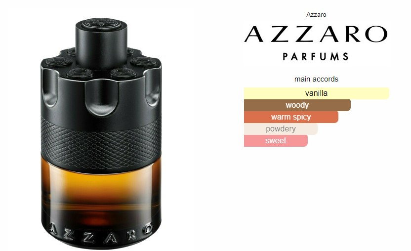

Téli-őszi illat
Készen áll egy új játékra? Dobjon fel egy érmét és jusson a legmagasabb szintre! Ezzel a gondolattal került bemutatásra az Azzaro The Most Wanted férfiillat, mely valóban rendkívül intenzív élményt ígér. Sokkal többet, mint korábban bármikor. A szó szerint kirobbanó illatkompozíció ikonikus fekete üvegcsében rejtőzik, mely feltárja a parfüm borostyán színezetét.